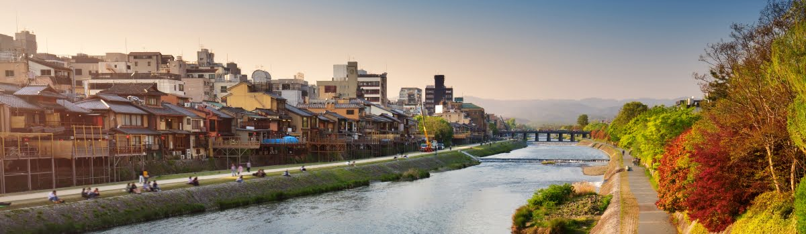
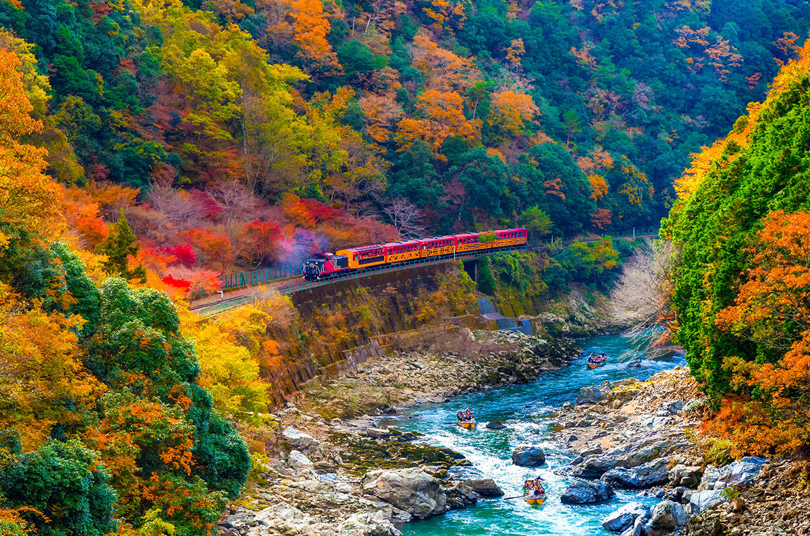

GEOGRAPHY
Located in the Kansai region of Japan, Kyoto is settled between of Higa Mountains and the Kitayama Mountains. This geographical layout gives the city a charming background and adds to its different seasons. The Kamo River flows through the city making it popular for walking and enjoying nature. The Katsura River, another waterway, runs nearby the city famous for its Instagram worthy scenery.
Kyoto is well-organized city, popular districts such as Gion and Arashiyama, have commuter-friendly streets with shops, restaurants, and cultural sites. The city's sidewalk is well-maintained, and many areas prioritize pedestrian over cars. While walking around the city is enjoyable, Kyoto also has a very efficient public transportation, with buses and trains to help the people reach their destination. The bus system is very useful for going to famous attractions of the city.

NATURE
Sagano, in the western part of Kyoto, is a beautiful spot that feels like a peaceful escape from the city. Surrounded by lush forests, rolling hills, and winding rivers, it's the perfect place to connect with nature. One of the most famous places here is the Arashiyama Bamboo Grove, where you can walk through towering bamboo stalks that sway in the breeze, creating a calming, almost magical atmosphere.
ARCHITECTURE
The city's buildings reflect centuries of history, culture, and craftsmanship. Kyoto's architectural style is deeply rooted in its religious and cultural significance, with many of its most famous structures being temples, shrines, and palaces.